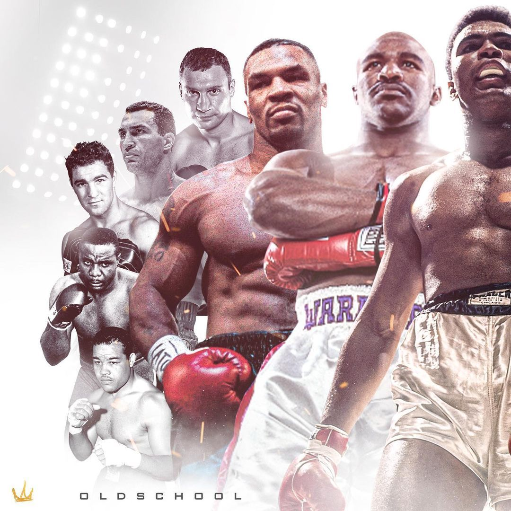

Voorstelling van mijn hobby
Voorstelling van boksen
Boksen is een intensieve en populaire vechtsport waarbij twee personen tegen elkaar strijden met behulp van stoten volgens vaste regels. De sport bestaat al honderden jaren en is vandaag wereldwijd bekend. Boksen draait niet alleen om kracht, maar ook om snelheid, techniek, discipline, conditie en strategie. Veel mensen denken dat boksen enkel gaat over slaan, maar in werkelijkheid vraagt de sport veel controle, concentratie en respect.
Tijdens een bokswedstrijd proberen de boksers punten te verdienen door correcte stoten te geven op het bovenlichaam en het hoofd van de tegenstander. Tegelijk moeten ze zichzelf verdedigen door bewegingen, ontwijkingen en een goede dekking te gebruiken. Daarom is voetenwerk een zeer belangrijk onderdeel van boksen. Een goede bokser moet snel kunnen reageren en slim nadenken tijdens een gevecht.
Boksen wordt beoefend in een boksring en de sporters dragen speciale bokshandschoenen, een bitje en soms extra bescherming. Er bestaan verschillende gewichtsklassen zodat wedstrijden eerlijk verlopen. Hierdoor nemen sporters het op tegen tegenstanders met een gelijkaardig gewicht. Professionele wedstrijden bestaan meestal uit meerdere rondes die telkens enkele minuten duren. Tussen de rondes krijgen de boksers korte rustmomenten.
Training is een heel belangrijk onderdeel van boksen. Boksers trainen vaak meerdere keren per week om hun conditie, kracht en techniek te verbeteren. Een typische training bestaat uit opwarming, lopen, springtouw, schaduwboksen, trainen op de bokszak en sparren met een trainingspartner. Daarnaast werken boksers ook aan spierkracht en uithouding. Discipline en doorzettingsvermogen zijn daarom noodzakelijk om beter te worden in deze sport.
Veel mensen kiezen voor boksen omdat het niet alleen goed is voor het lichaam, maar ook voor de geest. Door te trainen krijg je meer zelfvertrouwen, leer je omgaan met stress en verbeter je je focus. Boksen helpt ook om energie kwijt te raken en fitter te worden. Daarom volgen niet alleen professionele sporters bokstrainingen, maar ook jongeren en volwassenen die gezond willen blijven.
Bekende boksers zoals Muhammad Ali, Mike Tyson en Floyd Mayweather hebben de sport wereldwijd populair gemaakt. Zij staan bekend om hun talent, techniek en indrukwekkende prestaties. Vandaag zijn er overal boksscholen waar beginners en gevorderden kunnen trainen. Boksen blijft groeien als sport omdat het uitdagend, spannend en motiverend is.
Ik vind boksen een interessante sport omdat je zowel fysiek als mentaal sterker wordt. Je leert respect hebben voor anderen, hard werken en jezelf verbeteren. Tijdens trainingen moet je blijven doorzetten, zelfs wanneer het zwaar wordt. Dat maakt boksen voor mij niet alleen een sport, maar ook een manier om discipline en zelfvertrouwen op te bouwen.
